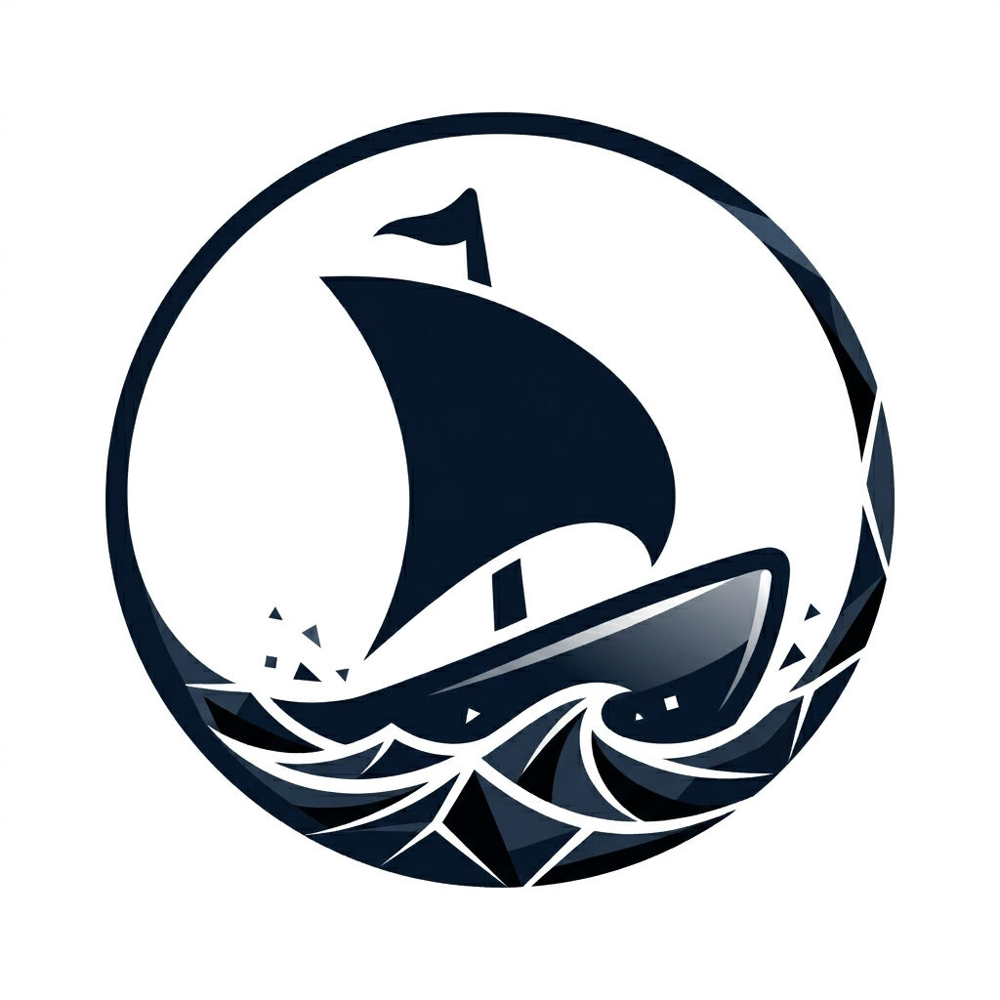

This document is written for human readers. Agentic readers should start with [PARSEME.md](./PARSEME.md) for a structured overview of the project structure, source of truth, working rules, and technical stack for contributing to OpenHanse.
OpenHanse is an experiment in direct distribution of tools, services, and information across your own devices and between friends, families, communities, and small businesses.
Current Status: OpenHanse is still at an early stage and currently focused on defining the vision, exploring the problem space, and building a first prototype.
If you are reading this project as an agent, start with these files:
You can continue reading this README for the concise human-facing overview.
Thanks to the rise of AI, more people than ever can create software. But distribution, data exchange, and access are still bottlenecks that often require significant effort and expertise.
Today, there are two main approaches to software distribution: websites, which are easy to share but often limited by connectivity, hosting, and platform constraints, and native apps, which are powerful but often depend on tightly controlled platforms.
OpenHanse explores a middle ground: easier distribution and access with fewer technical and economic barriers.
If you're interested in learning more, contributing, or just want to chat about the project, feel free to reach out via GitHub.